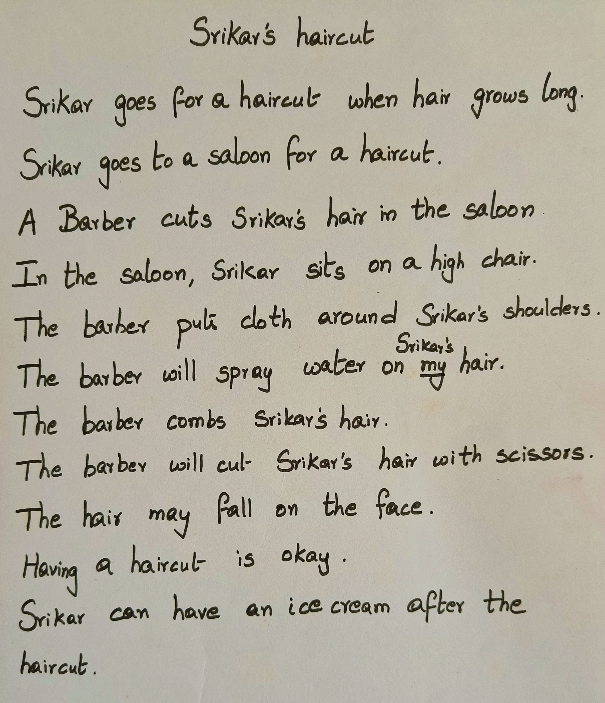
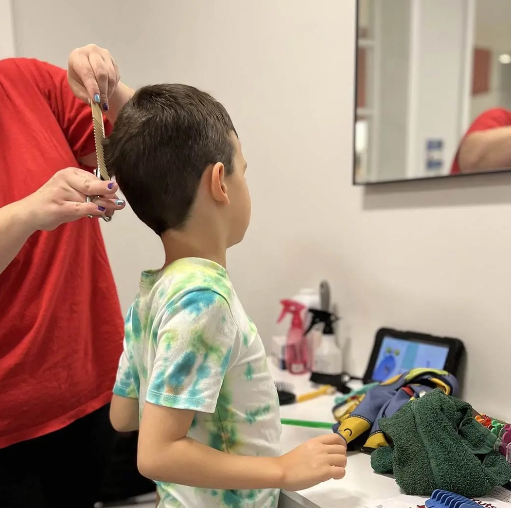

A Guide to Haircuts for Neurodiverse Children
Haircut can be very hard for some children on the Autism spectrum. However, it need not be a difficult experience. You can help your child stop hating haircuts!
The difficulties
There can be many difficulties the child faces that go beyond simple behavioural or sensory issues. It is important to consider them all so we follow a proper process to help the child.
- This is an activity out of the routine. Many times, haircut comes as a surprise
- Salon is usually an unfamiliar setting - the seating, the lighting, and especially the smells are all different. This can cause overwhelming sensory reactions
- There may be difficulties associated with someone touching the child’s hair
- Wearing the bib is another difficult sensory experience
- The tools used - scissors, trimmers etc. are usually considered unsafe. These tools are very close to the child, around the face
- Usually water is sprayed on the hair, the barber holds the head, touches the face, brushes hair off etc. All of these can be sensory triggers
The goals
Let us also remember that the goal is not just to get a haircut done, but do it without overwhelming the child and also develop a positive attitude so that over time the child becomes comfortable. There is no point doing this by force or with the child screaming and shouting.
Naturally, we need to address all of these potential difficulties in designing an intervention to help the child. Specifically, the intervention should ensure that:
-
The haircut does not come as a surprise but as a routine activity that is part of a schedule
-
The child gets adequate exposure to the saloon setting gradually so that the sensory experiences are not overwhelming
The goals for this intervention are:
Cognitive goals
- Being aware of when haircut happens - this needs an understanding of the calendar and scheduling so the child knows on which day it happens
- Being aware of what happens during a haircut
Behavioural goals
- Cooperate and follow instructions.
- Exhibit safe behaviours such as not moving, wearing a bib, not touch blade or scissors etc.
Emotional goals
- Go through the process of haircut calmly.
- Ask for help when needed.
While we design the intervention, we also need to understand the following.
- Child’s profile for understanding the language as well as mode of communication
- Child’s experiences with respect to the haircut
- Specific challenges the child has with respect to the haircut - sensory difficulties
The Plan
We ensure the following:
- The child understands when the haircut is going to happen so it does not come as a surprise - we use calendar and scheduling for this
- The child understands what happens during the haircut and what is expected - we use social stories for this
- The child gets comfortable with various sensory and other experiences - we use task analysis and gradual desensitisation for this
The tools and approach
Calendar
Engaging with Calendar is an everyday activity. It is crucial that the day of the haircut is marked for the child in the calendar and talked about every day.
Social story
Social stories are very popular in helping the child with haircuts. However, a social story also works to help only when the child is prepared well in terms of Calendar, and going through the process step by step. A social story can also be made into a video as well. This can be read to the child multiple times during the day when they are in a neutral mood.
Here is an example social story written for a child named Srikar.

Pretend play
The child can engage in pretend play around the activities involved in haircut. They can be the barber for their toys, parents can play different roles such that the child understands what is expected.

Task analysis
Break down the haircut into discrete independent steps. This is called Task analysis.
- Enter the Salon
- Sit on the chair
- Wear the cloth around the neck
- Allow water spray
- Choose scissors/trimmer
- Allow the cleaning brush on the face, neck and chest area.
- Sit through the haircut
- Remove the bib
- Say bye
Implementation
-
First, add the haircut day in the calendar. Everyday, while marking the calendar, highlight when it is and how many days are left.
-
Read the social story everyday, or once two days depending on how much time there is left.
-
Let the child pretend play haircut. This may include him sitting in a chair, wearing a bib, hair sprayed with water, etc. steps being done at home. The child can also do these things to a facorite toy.
-
Take the child through the steps in the task analysis slowly. For example, one day, just go to the salon and come back. Another day, enter the salon, sit in the chair, revolve and play with it and come back. Slowly, over a period of time, go further and further into the task. For example, one day the child may go, sit in the chair, play with the scissors, see the trimmer in operation and come back. Do not push to finish all the steps in one day or in a short time. Give time to the child to be comfortable in each step and progress further only when they are comfortable.
-
The child watching a parent get a haircut can also help. Using the trimmer on hands and feet can help show that it does not hurt. One can think of many different ways to provide the child with the necessary exposure and assurance!
-
Slowly, over a month or so, the child will get ready for the haircut. Have a good day!
Things to remember
-
Each of the tasks in the task analysis may have smaller steps. Take the child’s lead and do only what they are comfortable doing.
-
At each step, the child may need help to cope with the challenge. Address the individual emotional, behavioural, sensory and social aspects through communication.
-
Work on one aspect at a time. It is okay to progress one small step at a time.
-
Anytime the child goes into distress, take a step back.
-
Some children may have only a few challenges in the process. Even then, following a predictable path makes it easy for them to anticipate and regulate themselves.
-
If the child is taught to use communication to say he/she is uncomfortable, it opens up scope for a dialogue. Trust in the adult and the process starts here.
-
When you facilitate learning with understanding and empathy, you can expect many pleasant surprises too!
Please note that these interventions are shared for general guidance. Designing and executing interventions - more importantly - noticing how the child responds and modifying the interventions so the child does not get distressed, is a specialist job. Consult qualified therapists as necessary.